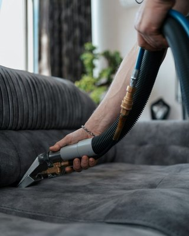

قبل لا تستلم فيلتك الجديدة.. افحص هذي النقاط
يوم استلام الفيلا الجديدة يوم ينتظره أي أحد من شهور، وأحيانًا من سنين. تدخل وتشوف الواجهة والصالة الواسعة والمطبخ الجديد، وتبي تخلص الأوراق وتستلم المفتاح بأسرع وقت. وهنا تصير أغلب أخطاء عند استلام فيلا جديدة بالرياض: توقّع قبل ما تنتبه لنقط الدهان على الرخام، وبقايا الغراء على أطراف البلاط، وغبار الجبس اللي ساكن داخل الدواليب والمكيفات. وكثير من أصحاب الفلل في الرياض يكتشفون هالأشياء بعد ما يدخلون الأثاث، فيصير تنظيفها أصعب وأغلى.
هالدليل يعطيك قائمة تمشي عليها بنفسك يوم فحص الفيلا قبل الاستلام بالرياض، بعين واحد يدور على الوسخ وبقايا التشطيب: وش لازم يشيله المقاول قبل ما توقع، ووش يحتاج تنظيف متخصص بعد الاستلام، ووش ممكن يتخرب لو انتظف غلط. ونمشي فيها على نقاط فحص الفيلا الجديدة بالرياض حسب أجزاء البيت، من الأرضيات والحمامات والمطبخ، للمكيفات والإضاءة، للحديقة والسطح.
💡 هالقائمة تركز على النظافة وبقايا التشطيب وما يبان بالعين من عيوب. لو عندك شك في شي إنشائي مثل شروخ كبيرة في الجدران أو هبوط في الأرضيات، اطلب رأي مهندس مختص قبل التوقيع.
أخطاء عند استلام فيلا جديدة بالرياض تبدأ من الاستعجال
أغلب الناس يروحون للاستلام بعد الدوام، ومعهم ساعة أو ساعتين بالكثير. يمشون في الغرف بسرعة، والإضاءة الصفراء مشغلة، والأرضية تلمع من بعيد، فيوقعون. وبعد أسبوع من السكن تبدأ الأشياء تبان: غبرة بيضاء ترجع على الأسطح كل يوم، وبقعة دهان على الدرج، ومجرى شباك مليان أسمنت ما ينفتح.
والفرق كبير بين ملاحظة تنكتب قبل التوقيع وملاحظة تبلّغ عنها بعد السكن. قبل التوقيع، شيل بقع الأسمنت والدهان الكبيرة شغل المقاول، وعنده سبب يسويه قبل ما يسلمك. بعد السكن، يصير الكلام: هالبقعة كانت موجودة؟ ولا صارت من النقل؟ وغالبًا تنتهي بإنك تدفع تنظيفها بنفسك.
خصص لـفحص الفيلا قبل الاستلام بالرياض نص يوم على الأقل، وروح في ضوء النهار، لأن الغبار الناعم وبقايا الدهان ما تبان تحت الإضاءة الصفراء.
أدوات تاخذها معك يوم الاستلام
- كشاف قوي تحطه مائل على الأرضيات والجدران
- قماشة مايكروفايبر بيضاء تمسح فيها الأسطح وتشوف وش يطلع
- مناديل مبللة تجرب فيها هل البقعة تطلع بسهولة أو لاصقة
- شريط لاصق ملون تعلّم فيه مكان كل ملاحظة
- جوال مشحون بمساحة كافية للصور والفيديو
- قارورة موية تجرب فيها الصفايات وميول الأرضيات
فحص النظافة العامة والتشطيب
الفيلا الجديدة تبان نظيفة من الباب، لأن العمال كنسوا الأرضيات قبل الموعد. لكن لما تقرب تلقى آثار الشغل في كل مكان: نقط دهان على الرخام والبورسلان، وخطوط دهان على إطارات الشبابيك ومفاتيح الكهرباء، وغراء البلاط ناشف على الأطراف والزوايا، وسيليكون زايد حول المغاسل والأطقم، ورشات أسمنت على الزجاج والألمنيوم.
امسح أي بقعة تشك فيها بالمنديل المبلل. لو طلعت بسهولة فهي غبار أو وسخ سطحي ينشال مع التنظيف العادي. ولو ما تحركت، فهي دهان أو غراء أو أسمنت ناشف، وهذي تحتاج أدوات ومنظفات معينة، ولو انشالت غلط ممكن تخدش الرخام أو الزجاج. اكتب النوع الثاني في الملاحظات بالذات، لأنه يحدد مين بيتحمل شيله.
غبار البناء المخفي
الغبار الظاهر على الأرض انكنس. اللي يبقى هو المخفي: داخل الدواليب المدمجة وأدراج المطبخ، وفوق إطارات الأبواب، وداخل مجاري الشبابيك، وفي فتحات المكيفات، وخلف أغطية الأفياش. وأغلبه غبار جبس ناعم جدًا، يطلع شوي شوي لأسابيع بعد السكن لو ما انشال من مكانه.
افتح كل دولاب ودرج، ومرر القماشة البيضاء على الرفوف من داخل، ووجّه الكشاف لمجاري الشبابيك. والقماشة البيضاء اللي تطلع مغبرة تقولك إن الفيلا ما انظفت إلا من فوق. والتوقع إن هالغبار بيروح مع أول مسحة يتكرر كثير في أخطاء عند استلام فيلا جديدة بالرياض، مع إن غبار الجبس لما ينبل يصير عجينة تلصق في الزوايا.
- نقط دهان على البلاط والرخام والزجاج
- دهان على مفاتيح الكهرباء والأفياش ومقابض الأبواب
- بقايا غراء وسيليكون على الأطراف وحول المغاسل
- أسمنت في مجاري الشبابيك والأبواب المنزلقة
- غبار جبس داخل الدواليب والأدراج وفوق الأبواب
- ملصقات المصنع وأفلام الحماية على الزجاج والأجهزة والأطقم
محتاج تنظيف احترافي؟
استلمت فيلتك الجديدة؟ فريقنا يشيل غبار الجبس وبقايا الدهان والغراء والأسمنت من كل زاوية قبل ما تدخل أثاثك
بقايا التشطيب: وش تلقى ووين؟
كل مرحلة من التشطيب تترك وراها نوع معين من البقايا، ومعرفة المرحلة تسهل عليك تعرف وين تدور. هالجدول يلخص أشهرها ويوجه عينك للأماكن اللي العمال يفوتونها، واعتبره أول صفحة في نقاط فحص الفيلا الجديدة بالرياض عندك:
| نوع البقايا | وين تلقاها غالبًا | ليش تهمك |
|---|---|---|
| نقط دهان | الأرضيات قرب الجدران، الدرج، مفاتيح الكهرباء، الإطارات | تنشال غلط فتخدش الرخام أو تشيل لمعته |
| غراء البلاط | أطراف البلاط والزوايا، تحت النعلات | يمسك الوسخ ويسوّد مع الوقت |
| سيليكون زايد | حول المغاسل والبانيو والأطقم وإطارات الشبابيك | يتلون بسرعة ويبان شكله سيئ |
| رشات أسمنت | الزجاج، الألمنيوم، الحوش، مجاري الشبابيك | تخدش الزجاج لو انمسحت ناشفة |
| غبار جبس | الدواليب، المكيفات، الإضاءة، الأسقف | يرجع على الأسطح لأسابيع ويتوزع مع المكيفات |
| غبشة الترويب | سطح البورسلان والسيراميك | تخلي الأرضية باهتة مهما مسحتها |
وبعض هالبقايا تبان فقط في ضوء معين. الغبشة على البورسلان مثلًا ما تبان تحت الإضاءة العلوية، لكن لما تحط الكشاف مائل على الأرض تشوف طبقة باهتة فوق البلاط.
فحص الأرضيات
الأرضيات أكبر مساحة في الفيلا، وأصعب شي تتعامل معه بعد ما يدخل الأثاث، فخلها من أول بنود فحص الفيلا قبل الاستلام بالرياض عندك. امشِ في كل غرفة والكشاف موجه بزاوية مائلة على الأرض، لأن الضوء المائل يكشف الخدوش والغبشة والبقع أكثر من الإضاءة العلوية.
دوّر على الخدوش من سحب المواد والعدد، والتشققات في البلاط أو الرخام، والبلاطات اللي لونها مختلف عن اللي حولها. فرق اللون أحيانًا طبيعي في الرخام لأنه حجر طبيعي، لكن بلاطة بورسلان أفتح أو أغمق بوضوح من باقي الغرفة غالبًا جت من دفعة ثانية. سجّل هالفروقات ضمن نقاط فحص الفيلا الجديدة بالرياض وأنت في ضوء النهار، لأنها تختفي تحت الإضاءة الصفراء.
الرخام اللي فقد لمعته
لو لقيت بقع باهتة أو مطفية وسط رخام لامع، خصوصًا قريب من الأبواب والدرج، فممكن تكون من مواد حمضية استخدمها العمال عشان يشيلون الأسمنت بسرعة. الحمض يشيل الأسمنت، لكنه ياكل لمعة الرخام معه. هالبقع ما تروح بالتنظيف العادي، وتحتاج جلي أو تلميع، فسجّلها قبل التوقيع واطلب معالجتها.
الفواصل بين البلاط
مرر الكشاف على الفواصل: هل هي كاملة؟ هل فيها بقايا أسمنت أو غراء بارزة؟ وهل لونها موحد؟ الفواصل الناقصة أو اللي فيها بقايا تتجمع فيها الأوساخ من أول أسبوع، وتسوّد بسرعة. وفي الحمامات والبلكونات، صب شوية موية وشوف هل تمشي باتجاه الصفاية، لأن الموية اللي تتجمع في زاوية تترك بقع وترسبات مع كل مسحة.
فحص دورات المياه والمطبخ بدقة
الحمامات والمطبخ فيها أكثر تشطيب في أصغر مساحة، وأكثر بقايا. وهي من أهم نقاط فحص الفيلا الجديدة بالرياض لأن أي تسريب أو تركيبة ناقصة أو بقايا مواد فيها تتحول لإزعاج يومي بعد السكن.
دورات المياه
شغّل كل حنفية دقيقة، وافتح الدولاب اللي تحت المغسلة ووجّه الكشاف على الوصلات. أي نقطة موية أو أثر رطوبة على الخشب ملاحظة تنكتب. وشوف الأطقم والحنفيات نفسها: كثير منها يجي عليه ملصق المصنع أو غلاف بلاستيك نصه مشلوع، وتحته بقايا غراء.
ودوّر على السيليكون الزايد حول البانيو والدش والمغاسل، وعلى بقايا أسمنت داخل المغاسل نفسها، لأن العمال يغسلون أدواتهم فيها أحيانًا. وتأكد إن الإكسسوارات مركبة: المرايا، والعلاقات، وحامل المناشف، والشطافات. التركيبات الناقصة تنكتب بسهولة قبل التوقيع، وبعد السكن تصير مشوار وفني ووسخ جديد في حمام نظيف.
المطبخ
افتح كل باب دولاب وكل درج، ومرر القماشة البيضاء من داخل. نشارة الخشب وغبار الجبس يتجمعون في الزوايا الداخلية وفي سكك الأدراج. وتأكد إن الأبواب تقفل مستوية مع بعض، لأن الباب المايل يحتك ويترك أثر مع الوقت.
وافحص سطح الرخام أو الكوارتز تحت الكشاف المائل: خدوش، أو بقع من مواد البناء، أو دهان، أو فواصل غير مسدودة عند الأطراف تتجمع فيها الموية والأوساخ. ولو المطبخ جا بأجهزة مركبة، شيل أفلام الحماية من على الستانلس قبل ما تسخن، لأن الغراء حقها يلصق مع الحرارة ويصير شيله أصعب.
فحص التكييفات والتمديدات الكهربائية من ناحية النظافة
المكيفات في الفيلا الجديدة اشتغلت غالبًا وقت التشطيب، وغبار الجبس والدهان كان في الجو. يعني فلاترها، وأحيانًا الدكت نفسه، محملة بغبار البناء. ولو شغلتها بعد السكن على حالها، بتوزع هالغبار على الأثاث والمفارش كل يوم.
افتح غطاء كل مكيف وشوف الفلتر، ووجّه الكشاف على فتحات التكييف في الأسقف. غبار أبيض على الشبك أو داخل الفتحة يعني إن الدكت فيه جبس. سجّلها، واطلب تنظيف الفلاتر والفتحات قبل الاستلام أو حطها في خطة التنظيف بعده. وشغّل كل مكيف دقايق وشوف هل مخرج التصريف يسرب موية على الجدار ويترك أثر.
المفاتيح والأفياش والإضاءة
مفاتيح الكهرباء والأفياش أكثر مكان يطيح عليه دهان، لأنها في نص الجدار. شوف أغطيتها: عليها دهان؟ عليها غراء من شريط الحماية؟ وفيه فيش بدون غطاء؟ ووجّه الكشاف داخل الثريات والسبوتات، لأنها يتجمع فيها غبار جبس وحشرات ميتة وقت التشطيب، وتبان بقع سوداء أول ما تنولع.
ومن نقاط فحص الفيلا الجديدة بالرياض اللي ينساها الناس: شبك الشفاطات في الحمامات والمطبخ، ومخارج التكييف في الممرات، وإضاءة الحديقة والسور. وتنظيف الكهرباء نفسها مو شغلك؛ لا تفك لوحة ولا تفتح أي غطاء غير غطاء الفيش أو المكيف، ولو فيه شي يحتاج فك فهذا شغل كهربائي.

فحص الحديقة والمساحات الخارجية
المساحات الخارجية تاخذ أقل اهتمام يوم الاستلام، مع إنها أكثر مكان تتجمع فيه مخلفات البناء. ابدأ بالحوش والممرات: بقع أسمنت على الإنترلوك أو البلاط، وبقايا دهان تحت الجدران الخارجية، وأكياس وكراتين ورا الفيلا أو جنب السور. وصب موية في أكثر من نقطة وشوف هل تروح لفتحات التصريف، لأن الموية اللي تتجمع تترك بقع وطين بعد كل غسيل.
وفي الحديقة، احفر بيدك أو بأداة صغيرة في أكثر من مكان، ودوّر على بقايا بناء مدفونة في التربة: أكياس أسمنت، وقطع بلاط، ومخلفات حديد وبلاستيك. هالبقايا تمنع الزرع ينمو، وتنظيف التربة منها بعد ما تزرع أصعب بكثير. والحديقة تتنسى كثير وسط أخطاء عند استلام فيلا جديدة بالرياض، وأثرها يبان بعد شهور لما يذبل الزرع في مكان معين بدون سبب واضح.
السطح والملاحق
اطلع للسطح وشوف كمية مخلفات البناء: قطع جبس، وأكياس، وعلب دهان فاضية، ورمل مكوّم في الزوايا. هالمخلفات تسد فتحات التصريف، وتتطاير مع أول عاصفة غبار وتدخل للفيلا من الشبابيك. والملاحق، مثل غرفة السائق وغرفة الخدامة والمخزن، تكون غالبًا آخر مكان ينظفه المقاول، وأحيانًا ما ينظفه أبد، فافحصها بنفس الدقة.
الواجهات والسور من برا
الواجهة الخارجية تتعرض لرشات الدهان والأسمنت من السقالات، وتبان أكثر على الحجر الفاتح. امشِ حول الفيلا من برا، وشوف أسفل الجدران وحول الشبابيك والأبواب، وأعلى السور. بقع الأسمنت على الحجر لو تركتها شهور تتصلب، وشيلها بعدين يحتاج مواد ممكن تغير لون الحجر.
ولو كان الاستلام بالنهار، خل جزء من فحص الفيلا قبل الاستلام بالرياض في المساء: شغّل إنارة السور والواجهة، وشوف هل فيه وحدات إضاءة داخلها غبار أو حشرات أو بقع دهان على زجاجها.
الزجاج والشبابيك
الزجاج يكشف أي وسخ في شمس الرياض. افحص كل شباك من داخل وبرا إذا تقدر: ملصقات المصنع، وأفلام الحماية، ورشات الأسمنت والدهان، والخدوش. والملصقات اللي تنترك في الشمس شهور يتصلب الغراء حقها ويصير شيله أصعب، فاطلب شيلها قبل الاستلام أو حطها أول بند في التنظيف.
وانتبه لطريقة شيل الأسمنت من على الزجاج. لو انمسح ناشف بقماشة أو بسكينة غلط، يخدش الزجاج خدوش ما تروح. ولو لقيت خدوش دائرية أو خطوط على زجاج جديد، فهذي ممكن تكون من تنظيف غلط سواه العمال، وتنكتب ملاحظة. ومجاري الشبابيك المنزلقة افتحها كاملة، لأن الأسمنت والرمل اللي فيها يخلي الشباك يعلق ويخرب المطاط مع الوقت.
وش يشيله المقاول ووش عليك؟
أغلب المقاولين يسوون تنظيف خشن قبل التسليم: كنس الأرضيات، وشيل المخلفات الكبيرة، ومسحة سريعة للحمامات. وهذا تنظيف يخلي الفيلا تبان مقبولة، لكنه ما يوصل لغبار الجبس داخل الدواليب، ولا يشيل بقع الدهان والغراء المتفرقة، ولا ينظف المكيفات من داخل.
اسأل المقاول أو المطور بوضوح: وش يشمل تنظيف التسليم عندكم؟ وخل الإجابة مكتوبة. ومن الأفضل إن البقع اللي تحتاج شغل خاص، مثل رشات الأسمنت على الزجاج والدهان على الرخام والرخام اللي فقد لمعته، تكون على المقاول قبل التوقيع، لأنها نتيجة شغله. والتنظيف الدقيق للسكن، من غبار ناعم وزوايا وفلاتر، غالبًا يكون عليك بعد الاستلام. وتوقيع الاستلام قبل ما تتفقون على هالحدود من أخطاء عند استلام فيلا جديدة بالرياض اللي تكلفك مرتين.
نقاط فحص الفيلا الجديدة بالرياض حسب نوع السطح
كل سطح في الفيلا يتأثر بالبقايا والتنظيف بطريقة مختلفة، وطريقة فحصه تختلف:
- الرخام: دوّر على البقع الباهتة من الأحماض، والخدوش من سحب المواد، ونقط الدهان قرب الجدران
- البورسلان والسيراميك: دوّر على غبشة الترويب، وبقايا الغراء على الأطراف، والفواصل الناقصة
- الزجاج: دوّر على الملصقات، ورشات الأسمنت، والخدوش الدائرية من التنظيف الغلط
- الخشب والأبواب: دوّر على نقط الدهان، وآثار الشريط اللاصق، والخدوش من النقل
- الستانلس والأجهزة: دوّر على أفلام الحماية، وبصمات الغراء، والخدوش
- الأسقف الجبسية: دوّر على نقط الدهان، وغبار الجبس على الكرانيش وحول الإضاءة
وهالتقسيم ينفعك بعد الفحص، لأنه يحدد نوع التنظيف اللي يحتاجه كل سطح. الرخام مثلًا ما يتحمل المنظفات الحمضية، والزجاج يحتاج يتنقع قبل شيل الأسمنت عنه، والستانلس يتخدش من الإسفنج الخشن.
غبار الجبس: وين يختبي وليش يرجع
غبار الجبس هو أكثر شي يشتكي منه أصحاب الفلل الجديدة بعد السكن. ينظفون الأرضيات والأسطح، وبعد يومين ترجع طبقة بيضاء خفيفة. والسبب إن الغبار ما انشال من مصدره: فوق الكرانيش، وداخل الإضاءة المخفية، وفي فتحات الصيانة بالأسقف، وداخل مجاري التكييف.
وقت فحص الفيلا قبل الاستلام بالرياض وجّه الكشاف على الكرانيش وفتحات الإضاءة المخفية، وافتح فتحات الصيانة في الأسقف إذا موجودة. لو لقيت طبقة غبار سميكة، فاعرف إن الفيلا تحتاج تنظيف من فوق لتحت، وإن تنظيف الأرضيات لحاله ما بيكفي. وتشغيل المكيفات قبل تنظيف هالمصادر يوزع الغبار من جديد على كل غرفة.
جدول نقاط فحص الفيلا الجديدة بالرياض
اطبع هالجدول أو حطه في جوالك، وامشِ فيه مكان مكان يوم الاستلام:
| المكان | وش تفحص | علامة المشكلة |
|---|---|---|
| الأرضيات | البقع والغبشة والخدوش والفواصل | نقط دهان، رخام باهت، فواصل فيها أسمنت |
| الجدران والأسقف | الدهان والكرانيش والإضاءة | نقط دهان، غبار جبس على الكرانيش |
| الحمامات | الأطقم والمغاسل والسيليكون وتحت المغاسل | سيليكون زايد، أسمنت في المغسلة، رطوبة |
| المطبخ | الدواليب من داخل والرخام والأجهزة | نشارة وغبار في الأدراج، أفلام حماية |
| المكيفات | الفلاتر والفتحات والتصريف | غبار أبيض، أثر موية على الجدار |
| الكهرباء | المفاتيح والأفياش والثريات | دهان على الأغطية، حشرات داخل الإضاءة |
| الزجاج والشبابيك | الملصقات والأسمنت والمجاري | خدوش، مجرى مليان أسمنت |
| الخارج | الحوش والحديقة والسطح والملاحق | مخلفات بناء، بقع أسمنت، تصريف مسدود |
وثّق كل ملاحظة قبل التوقيع النهائي
أي ملاحظة ما لها صورة ولا مكتوبة يصعب تثبتها بعدين. لكل ملاحظة، خذ صورة قريبة توضح البقعة أو العيب، وصورة أبعد توضح مكانها في الغرفة. وصوّر القماشة البيضاء بعد ما تمسح فيها داخل دولاب أو فوق باب، لأنها توضح كمية الغبار أكثر من أي وصف.
بعدها اجمع الملاحظات في قائمة مرقمة: الرقم، والمكان، ونوع البقايا أو العيب، والصورة. وأرسلها للمطور أو المقاول برسالة أو إيميل، واطلب موعد واضح لمعالجتها وموعد ثاني لإعادة الفحص. والتوقيع قبل ما تكون هالقائمة مرسلة يدخل في أخطاء عند استلام فيلا جديدة بالرياض، لأن المقاول بعد التوقيع ما يكون عنده سبب يستعجل في شيل البقايا.
وصوّر فيديو متصل للفيلا كاملة يوم الاستلام، غرفة غرفة، والكشاف مائل على الأرضيات. هالفيديو يوضح حالة الفيلا في تاريخ معين، ويفيدك لو صار نقاش بعدين هل البقعة كانت موجودة قبل النقل أو بعده.
كيف تجهز الفيلا بالشكل المثالي بعد الاستلام وقبل السكن؟
بعد ما تنعالج الملاحظات وتستلم المفتاح، يجي دور التجهيز. وأهم خطوة فيه هي التنظيف الشامل قبل ما يدخل أي أثاث، لأن الفيلا الفاضية تخليك توصل لكل زاوية، وتشيل غبار الجبس من مصدره بدل ما يتوزع على الكنب والسجاد والمفارش.
تنظيف فيلا بعد التشطيب شغل ثقيل: غبار ناعم في كل مكان، وبقايا دهان وغراء وأسمنت، وزجاج كثير، وأرضيات كبيرة، وحمامات ومطبخ فيها بقايا مواد. وعشان كذا أغلب أصحاب الفلل يحجزون شركة تنظيف فلل بالرياض بعد الاستلام مباشرة، والفريق يشتغل بمكائن ومنظفات مناسبة لكل سطح، ويشيل البقايا من الرخام والزجاج بدون ما يخدشها أو يطفي لمعتها.
- شفط غبار الجبس من الأسقف والكرانيش والدواليب ومجاري الشبابيك
- إزالة بقايا الدهان والغراء والسيليكون والأسمنت
- تنظيف الزجاج والواجهات الداخلية وشيل الملصقات وأفلام الحماية
- غسيل الأرضيات وتنظيف الفواصل من الغبشة والبقايا
- تنظيف الحمامات والمطبخ من بقايا التشطيب
- تنظيف فلاتر المكيفات وفتحاتها وأغطية الإضاءة والأفياش
رتّب الخطوات كذا: معالجة الملاحظات أول، بعدين التنظيف الشامل من فوق لتحت، بعدين تشغيل المكيفات بعد تنظيف فلاترها، وآخر شي الستائر والأثاث. ولو دخلت الأثاث قبل التنظيف، بيتشرب الكنب والسجاد الغبار من أول يوم، وتحتاج تنظفهم بعد شهر.
الخزانات والمسبح قبل أول تعبئة
خزانات الفيلا الجديدة، العلوية والأرضية، ممكن يكون فيها رمل وغبار وبقايا مواد دخلت من الفتحات وقت البناء. ولو تعبت الموية فيها على حالها، بيوصلك هالغبار في الحنفيات والغسالة والسخانات.
افتح غطاء الخزان ووجّه الكشاف لداخله: هل القاع نظيف؟ هل فيه رمل أو قطع جبس؟ وهل الغطاء محكم وفتحة التهوية عليها شبك؟ ولو فيه بقايا، نظفه وعقمه قبل أول تعبئة. ونفس الشي مع المسبح لو موجود: القاع غالبًا فيه غبار وأسمنت، وتنظيفه وهو فاضي أسهل بكثير من تنظيفه وهو مليان.
الصفايات والمجاري ومخلفات البناء
الصفايات في الفيلا الجديدة أكثر شي ينسد بمخلفات البناء، لأن العمال يغسلون أدواتهم ويكنسون الرمل والجبس فيها. والانسداد ما يبان يوم الاستلام، يبان بعد أسبوع لما تبدأ تستحم وتغسل.
صب قارورة موية في كل صفاية ومغسلة وشوف سرعة التصريف. الموية اللي تقعد ثواني قبل ما تنزل علامة إن فيه رمل أو أسمنت تحت. وارفع غطاء الصفاية إذا تقدر وشوف هل فيه بقايا ظاهرة. ولا تصب أحماض أو منظفات قوية عشان تفتحها، لأنها ما تذوب الأسمنت وممكن تضر المواسير، والصح إن المقاول ينظفها قبل التسليم.
أخطاء تخرب التنظيف بعد الاستلام
بعض أخطاء عند استلام فيلا جديدة بالرياض تصير بعد التوقيع، في أول أيام الحماس. أولها تشغيل المكيفات بفلاترها المليانة غبار، فيتوزع الجبس في كل الغرف. وثانيها إدخال الستائر والسجاد قبل التنظيف، فتتشرب الغبار.
وفيه اللي يحاول يشيل بقع الدهان من الرخام بسكينة، فيخدشه، أو بمنظف حمضي، فيطفي لمعته. وفيه اللي يمسح غبار الجبس بموية من أول مرة، فيتحول لطبقة بيضاء لاصقة تحتاج شغل أكثر. الصح إن غبار الجبس ينشفط ناشف أول، وبعدين يجي المسح الرطب. ولو مو متأكد من المنظف المناسب لسطح معين، جرّبه على زاوية مخفية قبل.
كيف تتأكد إن التنظيف انعمل صح؟
سواء نظفت بنفسك أو مع فريق، افحص النتيجة بنفس الأدوات اللي استخدمتها يوم الاستلام. امسح القماشة البيضاء داخل الدواليب وفوق الأبواب وعلى الكرانيش، ولازم تطلع نظيفة أو بغبار خفيف جدًا. وحط الكشاف مائل على الأرضيات، وشوف هل اختفت الغبشة والبقع.
وشوف الزجاج في ضوء الشمس المباشر، لأن الخطوط والبقع تبان فيه بوضوح. وافتح فلاتر المكيفات، وصب موية في الصفايات مرة ثانية. ولو كل هالنقاط نظيفة، فالفيلا جاهزة للأثاث. ولو لقيت غبار يرجع بعد يومين، فغالبًا فيه مصدر ما انشال، مثل فتحة تكييف أو كرنيش.
قبل يوم الاستلام بأسبوع
التجهيز للاستلام يبدأ قبل الموعد. اسأل المطور أو المقاول وش يشمل تنظيف التسليم عندهم، ومتى بيخلصونه، لأنك تبي تستلم بعده مو قبله. واطلب إنه يخلص قبل موعدك بيوم على الأقل، لأن الأرضيات اللي انمسحت قبل ساعة تخفي الغبار والبقع تحت الرطوبة، وما تبان إلا بعد ما تنشف. واسأل هل الكهرباء والموية موصولة، لأنك بدونها ما تقدر تجرب الصفايات ولا تشغّل المكيفات وتشوف فلاترها، ويصير نص فحص الفيلا قبل الاستلام بالرياض على الورق بس.
واتفق على مدة الزيارة، وقل لهم إنك محتاج نص يوم، عشان ما يستعجلك أحد. وجهز أدواتك في شنطة وحدة من الليلة اللي قبلها: الكشاف، والقماش الأبيض، والمناديل المبللة، والشريط الملون، والقارورة. واشحن جوالك كامل، لأن التصوير لنص يوم يخلص البطارية أسرع مما تتوقع.
متى أفضل وقت تروح فيه للاستلام؟
الاستلام بالليل تحت الإضاءة الصفراء من أخطاء عند استلام فيلا جديدة بالرياض المتكررة، لأن الموعد يجي بعد الدوام. روح في الصباح أو قبل العصر، عشان يكون ضوء النهار داخل من الشبابيك وقت فحص الفيلا قبل الاستلام بالرياض. الضوء الطبيعي يكشف نقط الدهان وغبشة البورسلان والبقع الباهتة في الرخام، اللي ما تبان في الليل.
وبعد ما تخلص، ارجع مرة ثانية في المساء إذا قدرت، وشغّل كل الإضاءة. السبوتات والإضاءة المخفية تكشف الغبار والحشرات داخلها، ونقط الدهان على الأسقف تبان بوضوح تحت الإضاءة القريبة.
الأسقف الجبسية والكرانيش
أغلب الفلل الجديدة في الرياض فيها أسقف جبس بورد وكرانيش وإضاءة مخفية، والسقف جزء من فحص الفيلا قبل الاستلام بالرياض ينساه كثير لأن العين تكون على الأرض. وجّه الكشاف بزاوية على السقف، وشوف نقط الدهان، والبقع الرمادية من أيادي العمال، والغبار على الكرانيش.
وأي بقعة صفراء أو رمادية في سقف تحت حمام أو تحت السطح ممكن تدل على تسريب. واعتبارها وسخ يروح بالتنظيف من أخطاء عند استلام فيلا جديدة بالرياض المتكررة، لأنها بترجع مهما نظفت، فاطلب فحصها قبل الاستلام. وداخل الإضاءة المخفية، الغبار يحترق مع حرارة اللمبات ويطلع ريحة خفيفة أول أيام التشغيل، فنظافتها قبل السكن تفرق.
الملاحق والمجلس والمخزن
المجلس في فلل الرياض غالبًا له مدخل مستقل ودورة مياه للضيوف، والملاحق مثل غرفة السائق والخدامة والمخزن تكون بعيدة عن البيت الرئيسي. وهالأماكن بالذات تتنسى في تنظيف المقاول، لأنها آخر شي يوصلون له.
افحصها بنفس القائمة: الأرضيات، والدواليب، والحمامات، والمكيفات. ودورة مياه المجلس بالذات افحصها كأنك ضيف، لأنها أول حمام يدخله الزوار. والمخزن غالبًا تلقاه مليان كراتين وبقايا مواد وغبار، فاطلب تفضيته وتنظيفه قبل الاستلام. ولو تتوقع ضيوف بعد السكن على طول، حط المجلس ودورة مياهه في أول نقاط فحص الفيلا الجديدة بالرياض.
خذ معك شخص ثاني
لما تكون لحالك، عينك تروح للأشياء اللي تحبها في الفيلا: المساحة، والإطلالة، وتصميم المطبخ، وتتجاوز نقطة الدهان على الدرج بدون ما تحس. وفي فحص الفيلا قبل الاستلام بالرياض وجود شخص ثاني يفرق، واحد يمسك الكشاف والقماشة، والثاني يكتب ويصور.
والأفضل يكون شخص ما هو متعلق بالفيلا مثلك، مثل قريب سبق واستلم بيت. وفيه غلطة نشوفها في أخطاء عند استلام فيلا جديدة بالرياض كثير: تروح العائلة كلها مع الأطفال، فيصير الاستلام زيارة فرحة أكثر منه فحص، والأطفال يركضون على أرضيات فيها غبار جبس ويوزعونه. خل الزيارة العائلية ليوم ثاني.
الدرج والدرابزين
الدرج الداخلي أكثر مكان يمر عليه العمال وهم شايلين مواد ودهان، فتلقى عليه بقايا أكثر من أي مكان ثاني. وفي نقاط فحص الفيلا الجديدة بالرياض امشِ عليه درجة درجة: نقط دهان على الرخام، وبقع أسمنت عند حواف الدرجات، وخدوش من سحب المواد.
والدرابزين نفسه افحصه وقت فحص الفيلا قبل الاستلام بالرياض بيدك وبالكشاف. الدرابزين الخشبي أو المعدني ممكن يكون عليه بقايا شريط حماية أو دهان من الجدار، والدرابزين الزجاجي يكون عليه عادة ملصقات وبصمات وغبار في قواعده. وحواف الرخام المكسورة أو المشطوفة غلط تتجمع فيها الأوساخ مع الوقت، فتنكتب ملاحظة.
غرف النوم والدواليب المدمجة
الدواليب المدمجة في غرف النوم تنقفل بعد ما يركبها النجار، وما أحد يفتحها لين يوم الاستلام. فتلقى داخلها نشارة خشب، وغبار جبس، وبقايا مسامير وبراغي، وأحيانًا أكياس وكراتين. افتح كل دولاب في فحص الفيلا قبل الاستلام بالرياض، ومرر القماشة البيضاء على الرفوف والأرضية من داخل، ووجّه الكشاف على سكك الأبواب المنزلقة.
والمرايا على أبواب الدواليب يكون عليها في العادة فيلم حماية أو ملصقات. وتأجيل تنظيف الدواليب لين تبدأ ترتب ملابسك يدخل في أخطاء عند استلام فيلا جديدة بالرياض اللي تبان في آخر لحظة: تلقى نفسك تفرغها وتنظفها وأنت مستعجل على السكن. خلها ضمن التنظيف الشامل قبل الأثاث.
الجراج والمدخل الرئيسي
الجراج والمدخل استقبلوا مواد البناء والعمال طول فترة التشطيب، فتكون أرضيتهم أكثر مكان فيه بقع أسمنت ودهان وزيت. وكثير يأجلونهم لآخر نقاط فحص الفيلا الجديدة بالرياض، مع إنهم أول شي تشوفه كل يوم. افحص الأرضية بالكشاف، ومجرى باب الجراج إذا كان فيه رمل أو بقايا تعيق حركته.
والباب الرئيسي للفيلا غالبًا يجي بفيلم حماية بلاستيك، وتحته أحيانًا غراء أو خدوش من نقل المواد. شيل جزء صغير من الفيلم في زاوية وشوف السطح تحته قبل التوقيع. ولو تركت الفيلم شهور في شمس الرياض، يصعب شيل الغراء بدون ما يتأثر السطح. شيله بعد الاستلام بأيام، وبكذا ما يصير من أخطاء عند استلام فيلا جديدة بالرياض المكلفة.
الأبواب الخشبية والمقابض
الأبواب الداخلية تجي بشريط حماية على الأطراف والمقابض، وكثير منها ينشال على عجل ويترك غراء. والحافة العلوية للباب نقطة ما تجي في بال أحد وقت نقاط فحص الفيلا الجديدة بالرياض. افتح الباب ومرر القماشة فوقه، وبتلقى في أغلب الأبواب طبقة غبار جبس ونشارة ما انمسحت.
وشوف المفصلات والمقابض: نقط دهان، أو بقايا معجون، أو بصمات غراء. وخلال فحص الفيلا قبل الاستلام بالرياض افحص إطار الباب عند الأرض، لأنه يتجمع عنده غبار وأسمنت ناشف وقت مسح الأرضيات، ويصير خط وسخ يبان مع الوقت.
الشفاطات وفتحات التهوية
شبك الشفاطات في الحمامات والمطبخ وفتحات التهوية في الأسقف يمسك غبار الجبس من أول ما يشتغل. وشغّل كل شفاط وحط منديل قريب منه: لو ما يسحبه، فممكن الشبك مسدود بالغبار، وهذا يخلي البخار والرطوبة تقعد في الحمام بعد كل استحمام وتترك بقع على السقف.
وتنظيف الشفاط يحتاج فك الشبك وغسله، فاكتب في نقاط فحص الفيلا الجديدة بالرياض أي شفاط شبكه مليان أو ما يسحب، واطلب تنظيفه مع المكيفات. ولو انترك، يطلع بعد أسابيع سواد حول فتحته في السقف.
ريحة الفيلا الجديدة
أي فيلا جديدة لها ريحة دهان وغراء في الأيام الأولى، وهذا طبيعي. لكن الريحة لو كانت قوية جدًا أو فيها ريحة صرف أو رطوبة، فتستاهل انتباه. وريحة الصرف في الحمامات غالبًا من الصفايات الناشفة اللي ما انستعملت، وتخف لما تصب فيها موية، لكن لو استمرت، اكتبها مع نقاط فحص الفيلا الجديدة بالرياض اللي ترسلها للمقاول.
والتهوية مع التنظيف الشامل تخفف ريحة الدهان بشكل واضح، لأن جزء منها يكون من غبار الدهان والمعجون على الأسطح نفسها. وقفل الفيلا أسابيع بعد الاستلام بدون تهوية لين يجي موعد النقل غلطة يقع فيها كثير، وتنحسب على أخطاء عند استلام فيلا جديدة بالرياض لأنها تخلي الريحة أقوى والغبار مستقر في كل مكان. افتح الشبابيك في الأيام الهادية، أو شغّل الشفاطات ساعات قبل التنظيف.
البلكونات والتراسات
البلكونة تجمع غبار الشارع وبقايا التشطيب مع بعض، لأنها مفتوحة طول فترة البناء. شوف أرضيتها وزوايا الدرابزين، وفتحة الصرف فيها، وإطار الباب اللي يطلع لها. والأبواب المنزلقة للبلكونات بالذات يتجمع في مجراها رمل وأسمنت، فافتحها لآخرها وشوف المجرى بالكشاف.
ولو التراس عليه بلاط فاتح، صب عليه موية وشوف هل تطلع بقع أسمنت أو دهان كانت مخفية تحت الغبار. الموية تكشف البقع على البلاط الخارجي أوضح من النظر للأرض وهي ناشفة.
غرفة الغسيل
غرفة الغسيل غالبًا صغيرة ويمر منها العمال كثير، فتلقى أرضيتها وزواياها مليانة غبار وبقايا. افحص الصفاية الأرضية بالموية، ونقطة صرف الغسالة، وشبك الشفاط إذا موجود. ونظفها قبل ما تركب الغسالة والنشافة، لأن تحريكها بعدين عشان تنظف خلفها شغل ثقيل.
لو لقيت ملاحظات كثيرة
لا تستغرب لو طلعت لك قائمة فيها عشرين أو ثلاثين ملاحظة. الفلل الجديدة فيها تشطيب كثير، والبقايا الصغيرة طبيعية. والمطلوب إنها تنكتب وتنعالج قبل السكن.
قسّم الملاحظات لثلاث مجموعات: أشياء لازم يعالجها المقاول قبل الاستلام مثل الأسمنت على الزجاج والرخام الباهت والتسريبات والصفايات المسدودة، وأشياء تنحل بالتنظيف الشامل بعد الاستلام مثل الغبار والبقع الخفيفة، وأشياء بسيطة تقدر تشيلها بنفسك. وهالتقسيم يسهّل النقاش مع المقاول، ويوضح لك وش تطلب من فريق التنظيف بالضبط.
إعادة الفحص بعد المعالجة
لما يقولك المقاول إن الملاحظات انعالجت، حدد موعد إعادة فحص، وامشِ بنفس القائمة المرقمة، وشيك كل ملاحظة بنفسك. والغلط الشائع هنا إنك تشيك على الكبيرة بس وتثق إن الصغيرة انشالت، وهو من أخطاء عند استلام فيلا جديدة بالرياض اللي تطلع بعد ما تفرش البيت.
وانتبه للوسخ الجديد اللي يجي مع المعالجة نفسها: دهان على البلاط حول جدار انعاد دهانه، أو غبار جديد بعد قص جبس، أو آثار أقدام وأدوات على أرضية كانت نظيفة. وهالجولة الثانية جزء من فحص الفيلا قبل الاستلام بالرياض مثل الأولى، فخذ لها نفس الوقت والأدوات، وخل التنظيف الشامل بعدها مو قبلها.
أول أسبوع بعد السكن
حتى بعد تنظيف شامل، ممكن تلاحظ غبار خفيف يرجع في أول أسبوع، خصوصًا لو كانت فيه مصادر مخفية. راقب نقاط فحص الفيلا الجديدة بالرياض الأساسية من جديد: الأسطح القريبة من فتحات التكييف، والكرانيش، وعتبات الشبابيك، والصفايات.
لو رجع الغبار بكمية واضحة، فدوّر على مصدره بدل ما تمسح كل يوم: فلتر ما انظف، أو فتحة تكييف فيها جبس، أو شباك مجراه فيه رمل. وتكفي عادة مسحة ثانية للمصدر نفسه. ولو ظهرت بقعة أو تسريب جديد، صوّره وأرسله للمقاول في نفس اليوم، وخل الستائر آخر شي تركبه، بعد ما تتأكد إن الغبار وقف يرجع، لأن القماش يمسك الغبار ويحتاج غسيل لو تركب بدري. وارجع لملف صور فحص الفيلا قبل الاستلام بالرياض وقارن.
نصيحة من فريق نقاء
من شغلنا في تنظيف الفلل الجديدة في الرياض، أكثر شي نشوفه بعد الاستلام هو غبار الجبس داخل الدواليب والكرانيش ومجاري المكيفات، وبقايا الدهان والغراء على الرخام والزجاج، ورخام فقد لمعته من أحماض استخدمها العمال. ونشوف ناس دخلوا الأثاث قبل التنظيف، واضطروا ينظفون الكنب والسجاد بعد شهر.
خذ وقتك في الاستلام، وخل التوقيع آخر خطوة، وخل التنظيف الشامل قبل الأثاث. وبكذا ما تدفع على تنظيف الكنب والسجاد مرتين.
خلاصة سريعة
فحص الفيلا قبل الاستلام بالرياض من ناحية النظافة يحتاج نص يوم وضوء نهار وكشاف وقماشة بيضاء، وقائمة تمشي عليها: بقايا التشطيب، والأرضيات، والحمامات والمطبخ، والمكيفات والإضاءة، والحديقة والسطح.
وأشهر أخطاء عند استلام فيلا جديدة بالرياض هي الاستعجال، والتوقيع قبل ما تتفق مع المقاول على البقايا اللي عليه، وتشغيل المكيفات وإدخال الأثاث قبل التنظيف الشامل. ولو مشيت على نقاط فحص الفيلا الجديدة بالرياض بالترتيب اللي في الجدول، بتغطي أغلب اللي تحتاجه الفيلا قبل السكن.
أسئلة شائعة عن استلام الفيلا الجديدة
الخاتمة
يوم استلام الفيلا في الرياض هو آخر فرصة تطلب فيها من المقاول يشيل بقايا شغله بدون نقاش. خذ الكشاف والقماشة البيضاء معك، وصوّر كل بقعة، وخل التوقيع آخر خطوة.
وبعد الاستلام، فريق مؤسسة نقاء يغطي كل أحياء الرياض بتنظيف الفلل بعد التشطيب، يشيل غبار الجبس وبقايا الدهان والغراء والأسمنت قبل ما تدخل أثاثك.
✨ اسكن فيلتك الجديدة وهي نظيفة فعلًا
كلمنا على واتساب، ونرتب لك تنظيف الفيلا بعد الاستلام وقبل ما تدخل أثاثك
احجز الآن مع نقاء للتنظيف
تنظيف الفيلا بعد التشطيب من السقف للحديقة، عشان تسكنها وهي جاهزة
- شفط غبار البناء من الأسقف والدواليب ومجاري الشبابيك
- إزالة بقايا الدهان والغراء والأسمنت
- تنظيف الزجاج والواجهات الداخلية
- غسيل الأرضيات وتنظيف الحمامات والمطبخ